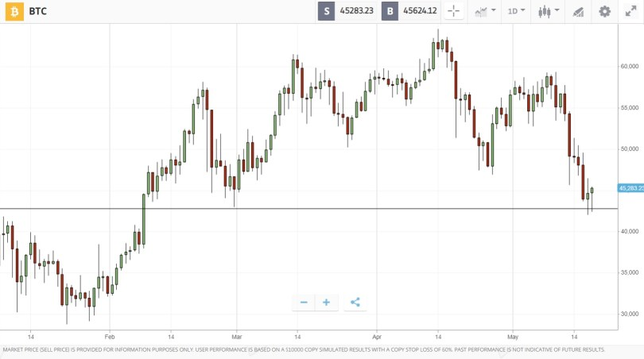

OUR COMMUNITY
Provides latest sources and Information

-
Hal Finney
The receiver of the first Bitcoin
-
Satoshi Nakamoto
Creater and richest holder
-
Barry Silbert
Top Bitcoin Investor
Cardano is a public blockchain platform. It is open source and decentralized, with consensus achieved using proof of stake. It can facilitate peer-to-peer transactions with its internal cryptocurrency Ada. Cardano was founded in 2015 by Ethereum co-founder Charles Hoskinson. The development of the project is overseen and supervised by the Cardano Foundation based in Zug, Switzerland.
Cardano was funded through an initial coin offering. The currency debuted with a market cap of $600 million. By the end of 2017, it had a market cap of $10 billion, and reached a value of $33 billion briefly in 2018 before a general tightening of the crypto market dropped its value back to $10 billion. According to Mashable, Cardano claims that it overcomes existing problems in the crypto market: mainly that Bitcoin is too slow and inflexible, and that Ethereum is not safe or scalable. IOHK has partnered with universities for blockchain research. In 2017, IOHK helped the University of Edinburgh launch the Blockchain Technology Laboratory.In 2020, IOHK donated $500,000 in Ada to the University of Wyoming to support the development of blockchain technology. In 2019, the Ministry of Education in Georgia signed a memorandum of understanding with the Free University of Tbilisi to use Cardano and Atala to build a credential verification system for Georgia. In 2019, footwear manufacturer New Balance announced a pilot program on the Cardano blockchain to track the authenticity of its newest basketball shoe. IOHK announced a partnership with the Ethiopian government in 2018 to deploy their technology in a variety of industries throughout the country.In April 2021, IOHK and the Ethiopia Ministry of Education announced plans to launch an identity and record-keeping system on Cardano for the country's five million students.
Technical aspects
Atypically, Cardano does not have a white paper. Instead it uses design principles intended to improve upon issues faced by other cryptocurrencies, such as scalability, interoperability, and regulatory compliance.
Cardano uses a proof-of-stake protocol named Ouroboros in contrast to Bitcoin and Ethereum which use proof-of-work protocols. Proof-of-stake blockchains use significantly less energy than proof-of-work chains.In February 2021, Hoskinson estimated the Cardano network used 6 GWh annually, less than 0.01% of the 110.53 TWh used by the Bitcoin network as estimated by the University of Cambridge.
Within the Cardano platform, Ada exists on the settlement layer. This layer is similar to Bitcoin and keeps track of transactions. The second layer is the computation layer. This layer is similar to Ethereum, enabling smart contracts and applications to run on the platform.[16] Cardano's smart contract language allows developers to run end-to-end tests on their program without leaving the integrated development environment or deploying their code.
The receiver of the first Bitcoin
Creater and richest holder
Top Bitcoin Investor